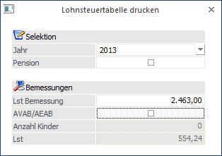

Über den Menüpunkt
1 Stammdaten
1 Lohnsteuertabelle
kann eine Lohnsteuerberechnung durchgeführt werden, ohne dass man einen AN in der Einzelabrechnung aufrufen muss. Dabei ist zu beachten, dass immer nur die monatliche Lohnsteuer ermittelt wird.

Eingabefelder
Ø Jahr
Aus der Auswahllistbox kann das Jahr gewählt werden, für das die Lohnsteuer berechnet werden soll.
Ø Pension
Durch Aktivieren der Checkbox Pension kann gesteuert werden, ob die Lohnsteuer für einen Pensionisten oder für einen "normalen" AN berechnet werden soll.
Ø Lst Bemessung
In diesem Feld wird die Bemessungsgrundlage Lohnsteuer eingetragen.
Ø ABAB/AEAB
Durch Aktivieren der Checkbox kann definiert werden, ob für die Berechnung der Lohnsteuer ein AVAB/AEAB berücksichtigt werden soll. Zusätzlich dazu kann noch die Anzahl der Kinder für die Berechnung des Kinderzuschlages (ab Juli 2004) angegeben werden.
Nachdem die Eingabe bestätigt wird, wird im Feld
Ø Lst
die entsprechende Lohnsteuer ausgewiesen.
Durch Drücken der ESC-Taste wird das Fenster geschlossen.